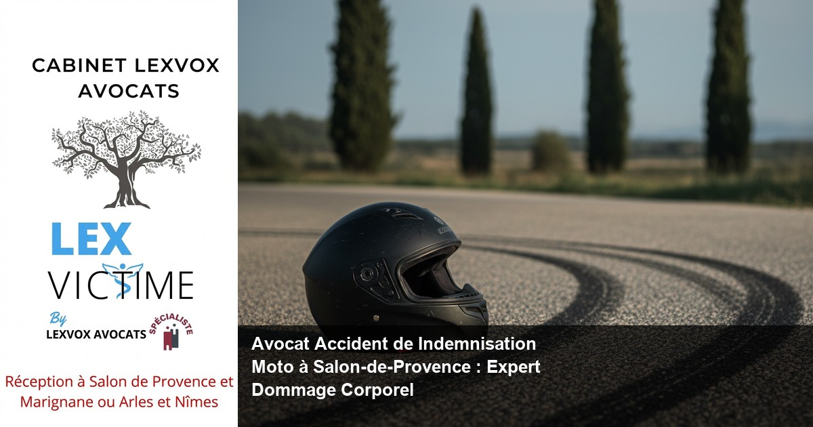

Accident de la route — Salon-de-Provence
Avocat Accident de Indemnisation Moto à Salon-de-Provence : Expert Dommage Corporel

— Par Me Patrice Humbert, avocat au barreau d'Aix-en-Provence
Victime d'un accident de moto à Salon-de-Provence ? LEXVOX AVOCATS, cabinet spécialisé en dommage corporel depuis plus de 20 ans, vous accompagne pour obtenir la meilleure indemnisation possible. Me Patrice Humbert, premier avocat certifié IA de France, défend vos droits face aux compagnies d'assurance. Notre bureau de Salon-de-Provence est à votre écoute pour une consultation gratuite de 30 minutes. Contactez-nous au 04 90 54 58 10 ou par email à contact@avocat-lexvox.com.
Obtenir la meilleure indemnisation possible : indemnisation des victimes et droit du dommage corporel à Salon-de-Provence
Le droit du dommage corporel : votre garantie à l'indemnisation intégrale
Le droit du dommage corporel constitue la branche du droit civil qui encadre l'indemnisation des victimes d'accidents de moto et autres traumatismes. À Salon-de-Provence, carrefour stratégique entre l'A7 et l'A54, les accidents de la route impliquant des deux-roues sont malheureusement fréquents. Selon l'expérience du cabinet (20+ ans, centaines de dossiers), les victimes d'accidents de moto subissent des préjudices corporels particulièrement graves, justifiant une indemnisation préjudice corporel adaptée.
Le principe fondamental est celui de la réparation intégrale : vous devez être replacé dans la situation qui aurait été la vôtre si l'accident n'avait pas eu lieu. Cette indemnisation intégrale couvre non seulement vos frais médicaux, mais également l'ensemble de vos préjudices : souffrances physiques, séquelles permanentes, perte de revenus, préjudice esthétique, d'agrément, et bien d'autres postes de préjudice.
Indemnisation préjudice corporel : les spécificités des accidents de moto
Les accidents de moto génèrent des dommages corporels souvent plus sévères qu'un accident automobile classique. L'absence de carrosserie protectrice expose le motard à des traumatismes crâniens, fractures multiples, atteintes médullaires et brûlures graves. Obtenir une indemnisation juste nécessite une évaluation médicale précise de chaque préjudice corporel.
Le droit de la réparation distingue plusieurs catégories de préjudices :
- Préjudices patrimoniaux temporaires : frais médicaux, arrêt de travail, assistance par tierce personne avant consolidation
- Préjudices patrimoniaux permanents : tierce personne définitive, perte de gains professionnels futurs, aménagement du logement et du véhicule
- Préjudices extrapatrimoniaux temporaires : déficit fonctionnel temporaire, souffrances endurées
- Préjudices extrapatrimoniaux permanents : déficit fonctionnel permanent, préjudice esthétique, d'agrément, sexuel
Obtenir la meilleure indemnisation possible à Salon-de-Provence
Obtenir la meilleure indemnisation possible implique une stratégie juridique et médicale rigoureuse. Notre cabinet LEXVOX AVOCATS, installé au cœur de Salon-de-Provence, maîtrise l'ensemble du processus d'indemnisation accident de moto. Nous analysons les circonstances de l'accident, identifions le responsable de l'accident, et évaluons l'ensemble de vos préjudices avec l'appui de nos médecins-conseils de victimes.La meilleure indemnisation dépend de plusieurs facteurs :
- La qualité de la constitution du dossier médical
- L'identification exhaustive de tous les postes de préjudice
- La contestation des propositions insuffisantes de l'assureur
- La négociation avec la compagnie d'assurance ou l'action judiciaire devant le Tribunal judiciaire d'Aix-en-Provence
Selon l'expérience du cabinet (20+ ans, centaines de dossiers), la présence d'un avocat augmente significativement le montant de l'indemnisation obtenue, parfois de 40 à 70% par rapport aux premières offres des assureurs.
Accompagner par un avocat : un accident de la route et faire appel à un avocat à Salon-de-Provence
Pourquoi faire appel à un avocat après un accident de la route ?
Faire appel à un avocat spécialisé après un accident de la route n'est pas une option, c'est une nécessité. Les compagnies d'assurance disposent de moyens considérables : services juridiques internes, médecins-conseils mandatés pour minimiser les indemnisations, experts habitués à défendre leurs intérêts financiers. Être accompagné par un avocat rééquilibre ce rapport de force. L'assistance d'un avocat vous garantit :- Une évaluation objective de l'intégralité de vos préjudices
- La contestation des expertises médicales orientées
- La résistance aux pressions pour accepter une offre insuffisante
- La maîtrise de chaque étape de la procédure
Le cabinet LEXVOX AVOCATS intervient dès les premiers jours suite à un accident de moto à Salon-de-Provence. Notre réactivité permet de sécuriser les preuves, d'accompagner les premières déclarations, et d'éviter les erreurs qui compromettraient votre droit à réparation.
L'expertise de LEXVOX AVOCATS en accident de moto
Me Patrice Humbert, avocat spécialisé avec certification CNB en dommage corporel et premier avocat certifié IA de France, consacre 100% de son activité à la défense des victimes. Cette spécialisation exclusive garantit une maîtrise approfondie du droit du dommage corporel, des nomenclatures médicales, et des stratégies de négociation face aux assureurs.
Notre cabinet intervient sur l'ensemble du département des Bouches-du-Rhône depuis nos 4 bureaux : Aix-en-Provence, Salon-de-Provence, Arles et Marignane. Cette implantation locale nous permet de connaître parfaitement les spécificités judiciaires du Tribunal judiciaire d'Aix-en-Provence, les pratiques des compagnies d'assurance régionales, et les médecins-experts fréquemment désignés.
Un accident de la route : vos droits immédiats
Dès qu'un accident de la route survient sur les axes autoroutiers A7, A54 ou la RN113 autour de Salon-de-Provence, plusieurs droits des victimes s'activent immédiatement :
1. Droit à l'information : l'assureur doit vous informer de vos droits dans les 8 mois (article L. 211-9 du Code des assurances, consultable sur Légifrance) 2. Droit à l'offre : l'assureur doit présenter une offre d'indemnisation dans les 8 mois pour les préjudices consolidés 3. Droit à l'expertise contradictoire : vous pouvez vous faire assister d'un médecin-conseil de victimes lors de l'expertise médicale 4. Droit au refus : aucune obligation d'accepter l'offre de l'assureur
Notre cabinet vous aide à exercer pleinement ces droits. Nous contestons systématiquement les expertises médicales bâclées ou orientées, et sollicitons des contre-expertises lorsque nécessaire.
Expert en indemnisation : défense des victimes et réparation intégrale à Salon-de-Provence
L'expertise médicale : moment clé de votre indemnisation
L'expertise médicale constitue l'acte médico-légal déterminant pour votre indemnisation. Le médecin-expert mandaté par l'assurance ou désigné par le juge analyse vos blessures, évalue vos séquelles, et fixe les taux de déficit fonctionnel. Son rapport conditionne directement le montant de votre réparation.
Selon l'expérience du cabinet (20+ ans, centaines de dossiers), la présence d'un avocat et d'un médecin-conseil de victimes lors de l'expertise augmente significativement la qualité du rapport. Notre rôle est de :
- Vérifier que tous les préjudices sont examinés
- Contester les minimisations ou omissions
- Faire consigner vos observations au procès-verbal
- Solliciter des examens complémentaires si nécessaire
Le Centre hospitalier de Salon-de-Provence, ainsi que les établissements d'Aix-en-Provence et Marseille, constituent les lieux habituels de suivi médical de nos clients victimes d'accidents de moto.
Expert en indemnisation : la double compétence juridique et médicale
Un expert en indemnisation maîtrise à la fois le droit et les aspects médicaux du dommage corporel. Cette double compétence est indispensable pour défendre les victimes efficacement. Me Patrice Humbert, avocat expert en dommage corporel, collabore avec un réseau de médecins-conseils spécialisés par pathologie : neurologie, orthopédie, psychiatrie, etc.
Cette expertise nous permet de détecter les erreurs d'évaluation, de contester les taux de déficit fonctionnel sous-évalués, et d'identifier les postes de préjudice oubliés. Par exemple, l'assistance par tierce personne est fréquemment minorée par les assureurs, alors qu'elle représente souvent le poste le plus important en cas de handicap permanent.
Réparation intégrale : un principe fondamental du droit
La réparation intégrale est le principe cardinal du droit de la réparation en droit civil français. Codifiée aux articles 1240 et suivants du Code civil, elle impose que la victime soit replacée dans la situation antérieure à l'accident. Cette réparation du dommage corporel doit être :
- Intégrale : couvrant tous les préjudices, sans exception
- Certaine : fondée sur des dommages avérés, non hypothétiques
- Personnelle : correspondant à votre situation spécifique
- Actuelle : tenant compte de votre état consolidé
Notre cabinet refuse toute indemnisation qui ne respecte pas ce principe. Nous privilégions la négociation amiable, mais n'hésitons pas à saisir le Tribunal judiciaire d'Aix-en-Provence lorsque l'assurance refuse une indemnisation juste.
Défense des victimes : notre engagement exclusif
La défense des victimes constitue l'unique orientation de notre cabinet. Contrairement à certains cabinets généralistes, nous ne défendons jamais les assureurs. Cette exclusivité garantit l'absence de conflit d'intérêts et une stratégie sans compromis pour défendre les victimes d'accidents de moto.
Notre méthodologie éprouvée sur des centaines de dossiers comprend :
- Analyse des circonstances de l'accident et du rapport de police
- Constitution du dossier médical complet
- Chiffrage exhaustif de l'ensemble de vos préjudices
- Négociation ou contentieux selon la stratégie optimale
- Suivi jusqu'au paiement effectif de cette indemnisation
Accident de la vie : avocat de victimes et avocat spécialisé à Salon-de-Provence
Les accidents de la vie : une réalité multiforme
Au-delà des accidents de la route, les accidents de la vie courante génèrent également des dommages corporels graves. Cette catégorie englobe les chutes, accidents domestiques, agressions, accidents de sport ou de loisirs. À Salon-de-Provence et ses environs, nous intervenons pour indemniser les victimes d'accidents de toute nature.
Le régime d'indemnisation diffère selon la nature de l'accident :
- Accidents de la route : application de la loi Badinter du 5 juillet 1985, protection renforcée des victimes non-conductrices
- Accidents médicaux : loi du 4 mars 2002 relative aux droits des malades et à la qualité du système de santé, intervention possible de l'ONIAM (Office national d'indemnisation des accidents médicaux)
- Accidents du travail : régime de Sécurité sociale avec possibilité d'indemnisation complémentaire en cas de faute inexcusable de l'employeur
- Aggressions : saisine de la CIVI (Commission d'indemnisation des victimes d'infractions)
Avocat de victimes : défendre vos intérêts exclusivement
Un avocat de victimes se distingue d'un avocat généraliste par sa spécialisation exclusive en réparation du préjudice corporel. Me Patrice Humbert, avocat expérimenté avec plus de 20 ans de pratique dédiée au dommage corporel, maîtrise les subtilités de chaque régime d'indemnisation.
Selon l'expérience du cabinet (20+ ans, centaines de dossiers), les victimes d'accidents qui sollicitent l'assistance d'un avocat dès les premières semaines obtiennent en moyenne une indemnisation 50% supérieure à celles qui négocient seules avec l'assureur. Cette différence s'explique par :
- La connaissance des jurisprudences récentes (notamment celles de Paris et Bordeaux)
- La maîtrise des techniques de valorisation de chaque poste de préjudice
- La capacité à résister aux pressions et tactiques dilatoires
- L'accès à des médecins-conseils de victimes indépendants
Avocat spécialisé : la certification CNB en dommage corporel
Me Patrice Humbert détient la mention de spécialisation CNB en dommage corporel, certification délivrée par le Conseil National des Barreaux après examen rigoureux. Cette reconnaissance officielle distingue l'avocat spécialisé du simple praticien occasionnel.
Un avocat spécialiste en dommage corporel offre :
- Une expertise technique pointue en droit du dommage corporel
- Une connaissance approfondie de la médecine légale
- Une formation continue obligatoire dans sa spécialité
- Un réseau de professionnels de santé et experts partenaires
Cette spécialisation exclusive permet à la victime de bénéficier d'un niveau d'expertise comparable à celui des services juridiques des compagnies d'assurance, rééquilibrant ainsi le rapport de force.
Les accidents de la vie courante : un enjeu d'indemnisation
Les accidents de la vie courante représentent plus de 20 000 décès annuels en France, selon les données de Santé Publique France. À Salon-de-Provence, ces accidents génèrent de nombreuses situations nécessitant une indemnisation :- Chutes dans les espaces publics (trottoirs défectueux, centres commerciaux)
- Accidents liés à des défauts de produits
- Intoxications ou maladies infectieuses contractées dans des établissements publics
- Morsures d'animaux
- Accidents de bricolage ou de jardinage avec séquelles permanentes
Le régime d'indemnisation de ces accidents repose sur le droit de la responsabilité civile (articles 1240 à 1245-17 du Code civil). Il faut généralement prouver une faute, un dommage, et un lien de causalité. Notre cabinet vous accompagne dans cette démarche probatoire.
Une indemnisation : assurance et expertise à Salon-de-Provence
Le rôle de l'assurance dans la procédure d'indemnisation
L'assurance intervient comme débiteur principal de votre indemnisation après un accident de moto. Deux situations se présentent :
1. Assurance du tiers responsable : si un autre véhicule est responsable de l'accident, son assureur de responsabilité civile doit indemniser vos dommages 2. Votre propre assurance : en cas de responsabilité partagée ou exclusive, vos garanties personnelles (garantie du conducteur, protection juridique) peuvent intervenir
La compagnie d'assurance désigne rapidement un gestionnaire de sinistre qui vous contactera. Attention : ce professionnel travaille pour l'assureur, pas pour vous. Son objectif est de minimiser le coût du dossier. Selon l'expérience du cabinet (20+ ans, centaines de dossiers), les premières offres d'assurance sous-évaluent systématiquement les préjudices de 30 à 60%.
Assurance et stratégie de défense des victimes d'accidents
Face aux compagnies d'assurance, une stratégie claire s'impose. Notre cabinet applique une méthodologie éprouvée :
Phase 1 - Sécurisation du dossier : Nous constituons un dossier médical complet, rassemblons tous les justificatifs (frais, arrêts de travail, factures), et documentons les circonstances de l'accident. Phase 2 - Expertise : Nous vous assistons lors de toutes les expertises médicales, avec notre médecin-conseil si nécessaire. Nous contestons immédiatement tout rapport lacunaire. Phase 3 - Négociation : Nous chiffrons l'intégralité de vos préjudices selon la nomenclature Dintilhac et négocions avec l'assureur. La solution amiable est privilégiée si l'offre est satisfaisante. Phase 4 - Contentieux : Si la négociation échoue, nous saisissons le Tribunal judiciaire d'Aix-en-Provence pour obtenir une décision judiciaire.Expertise médicale : vos droits face à l'expert
L'expertise médicale est un moment déterminant que beaucoup de victimes d'accidents abordent sans préparation. L'expert médical, même lorsqu'il est désigné par un juge, n'est pas votre médecin traitant. Son rôle est d'évaluer objectivement vos dommages corporels à un instant donné.
Vos droits lors de l'expertise :
- Droit à l'assistance : vous pouvez être accompagné d'un avocat et d'un médecin-conseil de victimes
- Droit à l'information : l'expert doit vous expliquer ses constatations
- Droit de contestation : vous pouvez faire consigner vos observations et désaccords
- Droit à dire-droit : vous pouvez solliciter une contre-expertise ou des examens complémentaires
Notre cabinet collabore avec un réseau de médecins-conseils spécialisés (neurochirurgiens, orthopédistes, psychiatres, etc.) qui assistent nos clients lors des expertises. Cette présence change radicalement la qualité du rapport final.
Indemnisation et expertise : éviter les pièges
L'assureur utilise plusieurs stratégies pour limiter votre indemnisation :
Piège 1 - L'offre précoce : Une proposition d'indemnisation avant consolidation médicale complète vous prive de la possibilité de faire évaluer vos séquelles définitives. Piège 2 - L'expertise express : Un médecin-conseil de l'assurance qui expédie l'examen en 15 minutes oublie nécessairement des préjudices. Piège 3 - La proposition globale : Une offre en un montant unique sans détail par poste de préjudice masque des oublis ou sous-évaluations. Piège 4 - La pression temporelle : L'assureur invoque des délais fictifs pour vous pousser à accepter rapidement.Notre rôle d'avocat spécialisé en indemnisation est de déjouer ces tactiques et de garantir que chaque poste de préjudice soit évalué et indemnisé correctement.
Préjudice et honoraire : votre avocat à Salon-de-Provence
Les différentes catégories de préjudices corporels
Le préjudice corporel se décline en de multiples postes de préjudice définis par la nomenclature Dintilhac. Cette classification, référence en matière de droit du dommage corporel, distingue :
Préjudices patrimoniaux temporaires (avant consolidation) :- Dépenses de santé actuelles (frais hospitaliers, médicaments, soins)
- Frais divers (déplacements, aménagements provisoires)
- Perte de gains professionnels actuels (arrêt de travail)
- Assistance par tierce personne temporaire
- Dépenses de santé futures (prothèses, rééducation)
- Frais de logement adapté et de véhicule adapté
- Perte de gains professionnels futurs (incapacité, reclassement)
- Assistance par tierce personne définitive (aide à la vie courante)
- Préjudice scolaire, universitaire ou de formation
- Déficit fonctionnel temporaire (impossibilité de mener une vie normale)
- Souffrances endurées (physiques et psychologiques)
- Préjudice esthétique temporaire
- Déficit fonctionnel permanent (séquelles invalidantes)
- Préjudice d'agrément (impossibilité de pratiquer un sport ou loisir)
- Préjudice esthétique permanent
- Préjudice sexuel
- Préjudice d'établissement (impossibilité de fonder une famille)
- Préjudices exceptionnels (selon les cas)
Selon l'expérience du cabinet (20+ ans, centaines de dossiers), les préjudices les plus souvent oubliés ou sous-évalués par les assureurs sont : l'assistance par tierce personne, le préjudice d'agrément, et les pertes de gains professionnels futurs.
Préjudice : l'évaluation personnalisée
Chaque préjudice doit être évalué en fonction de votre situation personnelle. Un même taux de déficit fonctionnel de 15% n'aura pas les mêmes conséquences financières selon votre âge, profession, revenus, et activités.
Par exemple, suite à un accident de moto entraînant une raideur permanente du genou :
- Un jeune sportif de 25 ans subira un préjudice d'agrément majeur (impossibilité de pratiquer le football, le ski)
- Un cadre commercial de 45 ans pourra prétendre à une perte de gains si ses déplacements professionnels sont entravés
- Un retraité de 70 ans verra principalement son préjudice de vie courante (difficulté à jardiner, se déplacer)
Cette personnalisation de l'indemnisation est un enjeu majeur de négociation face aux assureurs qui appliquent des barèmes standards. Notre expertise d'avocat expert en dommage corporel consiste à valoriser chaque spécificité de votre situation.
Honoraires transparents et protection financière
La question des honoraires de votre avocat est légitime. Notre cabinet LEXVOX AVOCATS pratique une tarification claire et éthique :
Structure tarifaire :- Part fixe : à partir de 700 EUR HT (convention d'honoraires signée)
- Part au résultat : 10-15% de l'indemnisation obtenue (hors débours)
Cette structure garantit :
- Un engagement financier initial limité
- Une rémunération proportionnée à la qualité du résultat
- Une motivation alignée sur vos intérêts (maximiser votre indemnisation)
Selon l'expérience du cabinet (20+ ans, centaines de dossiers), l'indemnisation supplémentaire obtenue grâce à notre intervention dépasse très largement le coût de nos honoraires. L'investissement dans un avocat spécialisé est donc économiquement rationnel.
Votre avocat à Salon-de-Provence : proximité et expertise
Notre bureau de Salon-de-Provence vous accueille pour une consultation gratuite de 30 minutes. Cette première rencontre permet de :
- Analyser votre situation et les circonstances de l'accident
- Évaluer les perspectives d'indemnisation
- Définir la stratégie juridique optimale
- Répondre à toutes vos questions sur la procédure d'indemnisation
Me Patrice Humbert et son équipe interviennent depuis Salon-de-Provence sur l'ensemble du département : Aix-en-Provence, Arles, Marignane, Marseille, et toutes les communes environnantes. Notre connaissance du tissu médical local (Centre hospitalier de Salon-de-Provence, cliniques d'Aix et Marseille) et des praticiens judiciaires constitue un atout stratégique.
Contact :- Téléphone : 04 90 54 58 10
- Email : contact@avocat-lexvox.com
- Adresse : Bureau LEXVOX AVOCATS de Salon-de-Provence
Procédure d'indemnisation à Salon-de-Provence : les étapes avec LEXVOX AVOCATS
Étape 1 : Déclaration et ouverture du dossier d'indemnisation
Dès qu'un accident de moto survient sur les routes de Salon-de-Provence (A7, A54, RN113 ou voies communales), la procédure d'indemnisation s'enclenche. Vos premières démarches conditionnent la suite :
Immédiatement après l'accident :- Alerter les secours (SAMU 15, pompiers 18)
- Faire constater l'accident par les forces de l'ordre (police, gendarmerie)
- Ne signer aucun document sauf le constat amiable factuel
- Photographier la scène si votre état le permet
- Recueillir les coordonnées des témoins
- Déclarer l'accident à votre assurance (obligation contractuelle)
- Consulter votre médecin traitant qui établira un certificat médical initial descriptif des blessures
- Conserver tous les justificatifs (frais médicaux, arrêts de travail)
- Contacter LEXVOX AVOCATS pour sécuriser vos droits
Notre intervention précoce évite les erreurs irréparables : déclarations maladroites, signature de documents engageants, acceptation d'une expertise sans assistance.
Étape 2 : Constitution du dossier médical et phase de soins
La phase de soins peut durer de quelques semaines à plusieurs années selon la gravité de vos blessures. Cette période précède la consolidation médicale, moment où votre état de santé ne s'améliorera plus significativement.
Actions pendant la phase de soins :- Suivi médical rigoureux au Centre hospitalier de Salon-de-Provence ou dans les établissements spécialisés
- Conservation de tous les documents médicaux (comptes-rendus, examens, prescriptions)
- Tenue d'un journal de bord : souffrances quotidiennes, limitations, besoins d'aide
- Chiffrage des frais restant à charge (tickets modérateurs, dépassements d'honoraires)
- Justification des pertes de revenus (arrêts de travail, perte de primes)
LEXVOX AVOCATS accompagne cette phase en :
- Vérifiant que l'assureur verse les provisions pour frais médicaux et pertes de revenus
- Sollicitant des provisions judiciaires si l'assurance refuse
- Préparant l'expertise médicale future
- Identifiant les professionnels de santé susceptibles de vous suivre
Cette préparation méticuleuse permet à la victime d'aborder l'expertise dans les meilleures conditions.
Étape 3 : L'expertise médicale contradictoire
La date de consolidation médicale permet de déclencher l'expertise médicale. Deux cas de figure :
Expertise amiable : L'assureur mandate un médecin-expert. Cette expertise n'a aucun caractère obligatoire. Vous pouvez la refuser et demander une expertise judiciaire. Expertise judiciaire : Sur requête de votre avocat, le juge des référés du Tribunal judiciaire d'Aix-en-Provence désigne un expert médical inscrit sur les listes de cours d'appel. Cette expertise a une valeur probante supérieure. Déroulement de l'expertise :- Convocation à une date précise (délai souvent de plusieurs mois)
- Examen médical complet par l'expert (anamnèse, examen clinique, étude du dossier)
- Présence de votre avocat et de votre médecin-conseil
- Discussion contradictoire sur chaque poste de préjudice
- Rédaction d'un rapport détaillé (délai de 2 à 6 mois)
Notre cabinet vous prépare spécifiquement à cette étape de la procédure cruciale. Nous briefons nos clients sur les questions posées, les pièges à éviter, et les éléments à mettre en avant.
Étape 4 : Négociation amiable ou action judiciaire
Après réception du rapport d'expertise, deux voies s'ouvrent :
Voie amiable :- Chiffrage précis de chaque préjudice selon la nomenclature Dintilhac
- Rédaction d'une demande d'indemnisation argumentée adressée à l'assureur
- Négociation des montants proposition par proposition
- Conclusion d'un protocole transactionnel si accord satisfaisant
- Paiement de l'indemnisation (généralement sous 1 mois après signature)
La voie amiable présente l'avantage de la rapidité (3 à 18 mois selon les dossiers) et de l'économie de procédure. Selon l'expérience du cabinet (20+ ans, centaines de dossiers), environ 60% de nos dossiers se concluent en amiable avec une indemnisation satisfaisante.
Voie judiciaire :- Assignation de l'assurance devant le Tribunal judiciaire d'Aix-en-Provence
- Phase d'instruction (échanges de conclusions, éventuellement nouvelle expertise)
- Audience de plaidoirie
- Jugement condamnant l'assureur à indemniser les préjudices retenus
- Appel possible devant la Cour d'appel d'Aix-en-Provence
- Exécution forcée du jugement si nécessaire
Le délai judiciaire varie de 18 mois à 4 ans selon la complexité et l'encombrement du tribunal. Nous privilégions cette voie lorsque l'écart entre notre demande et l'offre de l'assurance justifie cette patience, ou lorsque l'assureur refuse toute négociation sérieuse.
Étape 5 : Paiement et clôture du dossier

Vos questions sur avocat accident de indemnisation moto à salon-de-provence :
Quel délai pour être indemnisé après un accident de moto ?
Le délai d'**indemnisation d'un accident** de moto varie considérablement selon plusieurs facteurs. En voie **amiable**, si vos blessures sont consolidées dans les 6 mois et que l'**assureur** coopère, l'**indemnisation** peut intervenir dans un délai de 12 à 18 mois après l'**accident**. Toutefois, en cas de **séquelles** graves nécessitant une consolidation longue (2 à 3 ans), ou en cas de désaccord nécessitant une procédure judiciaire, le délai peut atteindre 4 à 5 ans. Selon l'expérience du cabinet (20+ ans, centaines de dossiers), **les victimes d'accident** assistées d'un **avocat** obtiennent leur **indemnisation** plus rapidement car la constitution rigoureuse du dossier accélère toutes **les étapes de la procédure**. De plus, nous sollicitons systématiquement des provisions pour vous permettre de faire face aux besoins urgents (frais médicaux, perte de revenus) sans attendre l'**indemnisation** définitive.
Puis-je refuser l'offre de l'assurance ?
Absolument. Vous n'avez aucune obligation d'accepter l'offre de l'**assurance**. Le principe de liberté contractuelle vous permet de refuser toute proposition d'**indemnisation** que vous jugez insuffisante. L'**assureur** peut certes faire une offre, mais vous êtes libre de la négocier, la contester, ou la refuser purement et simplement. En pratique, selon l'expérience du cabinet (20+ ans, centaines de dossiers), les premières offres des **compagnies d'assurance** sous-évaluent systématiquement **les préjudices** de 30 à 60%. Notre rôle d'**avocat spécialisé en indemnisation** est de chiffrer précisément chaque **poste de préjudice** et d'argumenter une demande réaliste. Dans la majorité des cas, l'**assureur** revoit substantiellement son offre initiale après nos interventions. Si aucun accord n'est trouvé, nous saisissons le Tribunal judiciaire d'Aix-en-Provence qui fixera judiciairement le montant de votre **indemnisation**.
Que faire si l'assureur conteste ma responsabilité dans l'accident ?
La contestation de responsabilité par l'**assureur** est une tactique fréquente pour limiter ou refuser l'**indemnisation**. Si vous êtes motard victime **d'un accident de la route** à Salon-de-Provence, la loi Badinter du 5 juillet 1985 vous protège fortement, sauf faute inexcusable de votre part (franchissement de ligne continue, excès de vitesse important, conduite sous emprise). Face à une contestation de responsabilité, plusieurs actions s'imposent : - **Rassembler les preuves** : rapport de police/gendarmerie, témoignages, photos, vidéos éventuelles - **Faire appel à un avocat** spécialisé qui analysera les **circonstances de l'accident** et le rapport de police - **Solliciter une expertise technique** du véhicule si nécessaire - **Engager une procédure judiciaire** pour faire trancher la question de responsabilité Dans la majorité des accidents de moto où un autre véhicule est impliqué, le motard bénéficie d'une présomption favorable. LEXVOX AVOCATS défend efficacement vos intérêts face aux tentatives de l'**assurance** de vous imputer une faute pour diminuer votre **indemnisation**.
Combien coûte un avocat spécialisé en dommage corporel ?
Notre cabinet LEXVOX AVOCATS pratique une tarification transparente adaptée aux dossiers de dommage corporel : - **Part fixe** : à partir de 700 EUR HT (selon la complexité du dossier) - **Part au résultat** : 10 à 15% de l'**indemnisation obtenue** Cette structure présente plusieurs avantages : - **Investissement initial limité** : la part fixe reste accessible - **Rémunération au résultat** : nos intérêts sont alignés sur les vôtres (maximiser votre **indemnisation**) - **Financement possible** : votre garantie protection juridique peut prendre en charge tout ou partie de nos **honoraires** - **Aide juridictionnelle** : selon vos ressources, vous pouvez bénéficier d'une prise en charge publique Selon l'expérience du cabinet (20+ ans, centaines de dossiers), le gain d'**indemnisation** obtenu grâce à notre intervention dépasse systématiquement le coût de nos **honoraires**. Par exemple, sur un dossier où l'**assureur** propose 50 000 EUR et où nous obtenons finalement 85 000 EUR, le gain de 35 000 EUR justifie largement nos **honoraires** (environ 10 000 EUR au total dans cet exemple). Vous conservez donc un bénéfice net significatif.
L'expertise médicale est-elle obligatoire ?
L'**expertise médicale** n'est pas juridiquement obligatoire, mais elle est incontournable en pratique pour **obtenir une indemnisation** correcte de vos **dommages corporels**. L'expert médical, qu'il soit mandaté par l'**assurance** (expertise amiable) ou désigné par le juge (expertise judiciaire), a pour mission d'évaluer vos blessures, **séquelles**, et handicaps résultant de l'**accident**. Deux types d'**expertise** : **Expertise amiable** : Proposée par l'**assureur**, elle n'a aucun caractère obligatoire. Vous pouvez la refuser, notamment si les conditions ne vous semblent pas réunies (consolidation médicale incomplète, absence de **médecin-conseil**). Toutefois, la refuser bloque généralement la procédure **amiable**. **Expertise judiciaire** : Ordonnée par le juge des référés du Tribunal judiciaire d'Aix-en-Provence, elle s'impose à toutes les parties. Cette **expertise** offre plus de garanties : expert indépendant, procédure contradictoire encadrée, rapport ayant force probante. Dans tous les cas, LEXVOX AVOCATS recommande vivement d'être assisté lors de l'**expertise** par un **avocat** et un **médecin-conseil de victimes**. Cette présence change radicalement la qualité du rapport et donc le montant final de votre **indemnisation**.
Quels sont les délais de prescription pour demander une indemnisation ?
Les délais de prescription déterminent la période durant laquelle vous pouvez agir en justice pour **obtenir une indemnisation**. En matière d'**accident de la route**, le délai de prescription est de **10 ans** à compter de la date de consolidation médicale (et non de la date de l'**accident**). Ce délai de 10 ans résulte de l'article 2226 du Code civil qui fixe la prescription des actions en **réparation du dommage corporel**. Concrètement : - **Accident** : 15 janvier 2020 - **Consolidation médicale** : 1er mars 2022 - **Délai de prescription** : jusqu'au 1er mars 2032 Attention toutefois : bien que le délai soit long, il est fortement déconseillé d'attendre. Plus vous agissez tôt, plus les preuves sont fraîches, les témoins disponibles, et les documents médicaux accessibles. De plus, certaines démarches ont des délais plus courts : - **Offre d'indemnisation** : l'**assureur** doit faire une offre dans les 8 mois (obligation légale) - **Recours CPAM** : la Caisse Primaire d'Assurance Maladie dispose de 3 ans pour récupérer ses débours - **CIVI (victimes d'infractions)** : délai de 3 ans après les faits ou après la décision pénale LEXVOX AVOCATS intervient dès les premières semaines **suite à un accident** pour sécuriser vos droits et respecter tous les délais de **la procédure d'indemnisation**.
Synthèse : votre droit à la réparation intégrale ?
Le **droit du dommage corporel** garantit à chaque **victime d'un accident** le principe de **réparation intégrale** de ses **préjudices**. Que vous soyez **victime d'accident** de moto, de voiture, ou d'un des nombreux **accidents de la vie**, votre droit à **indemnisation** repose sur une évaluation exhaustive de chaque **poste de préjudice** : **arrêt de travail**, **séquelles** permanentes, souffrances, ou encore assistance par **tierce personne**. **Obtenir une indemnisation** juste et complète nécessite d'être **accompagné par un avocat** spécialisé qui maîtrise la **ré
Première consultation gratuite — 30 min
Besoin d'un avocat spécialisé à Salon-de-Provence ? Nous évaluons votre dossier gratuitement et vous indiquons vos droits à réparation.
Cabinet LEXVOX AVOCATS — Me Patrice Humbert — Spécialisation CNB dommage corporel — Bureaux à Aix-en-Provence, Salon-de-Provence, Arles et Marignane